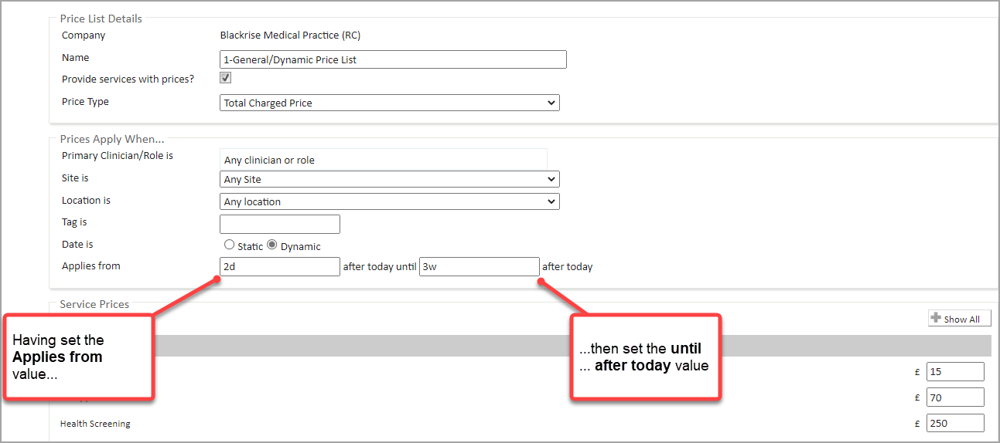
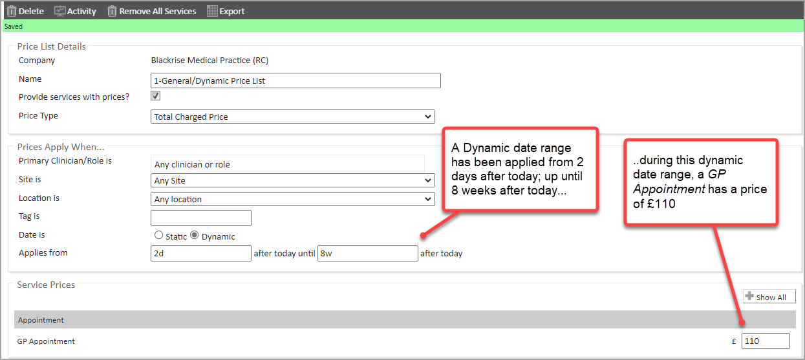
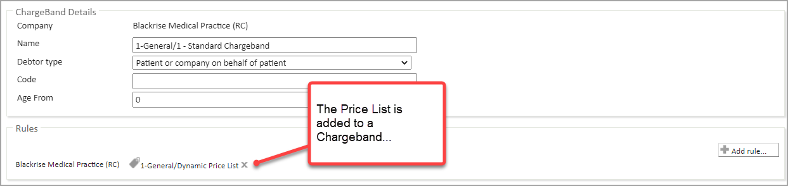
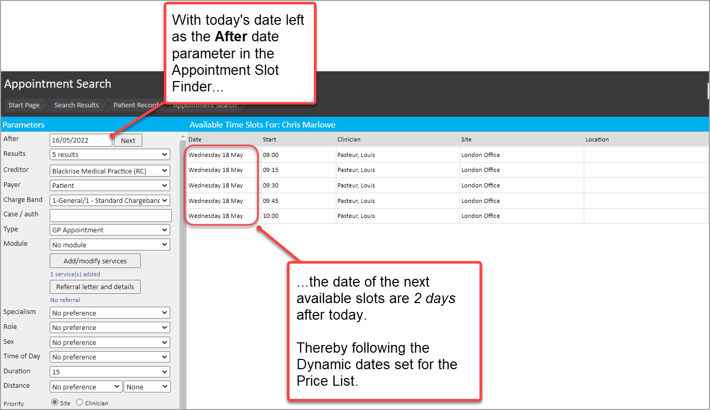
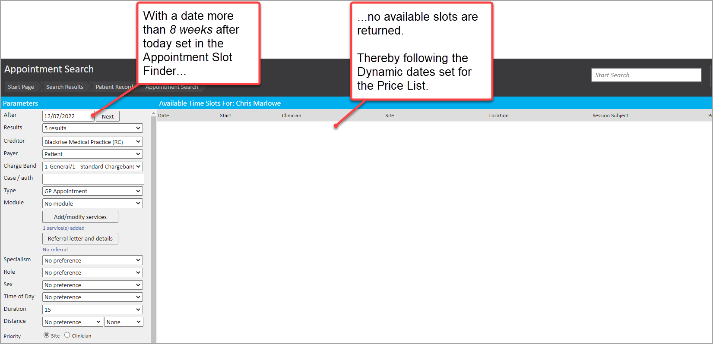
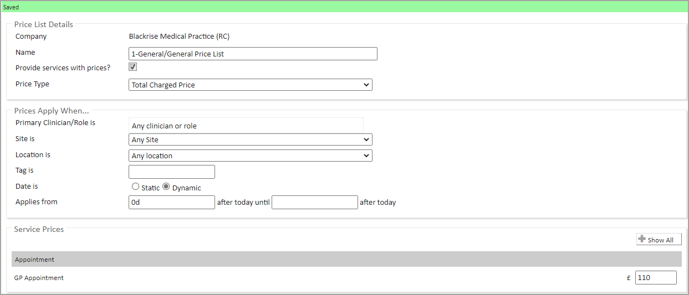
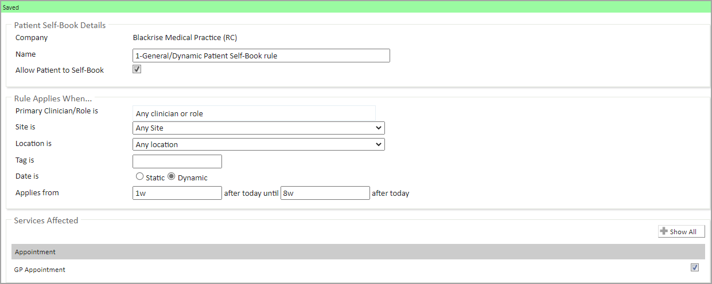
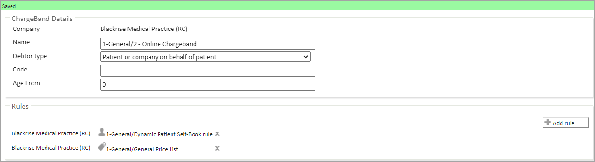

Billing Rules are a powerful feature set in Meddbase which enable you to define available services and their prices.
You may want to set services and prices to only be available within time windows relative to today. For example, at least 1 week after today. Or, at most 4 weeks after today.
The Dynamic Date Range filter feature for selected Billing rules has been designed to address this.
What you need in place before you can start using Dynamic Date Ranges for Billing Rules
The principles for how Dynamic Date Ranges can be applied for Billing Rules
What types of Billing Rules can have Dynamic Date Ranges applied to them
An example of how a user can set up Dynamic Date Range configuration for a Billing Rule
Scenarios illustrating how Dynamic Date Ranges set for Dynamic Billing Rules can impact the booking process
What are the general principles for Dynamic Date Range filters for Billing Rules?
The general principle is that each Billing Rule for which Dynamic Date Ranges are available can have:
A dynamic number of days, weeks or months after today when the Billing Rule becomes valid
A dynamic number of days, weeks or months up until which the Billing Rule is valid
A dynamic range between which the Billing Rule is valid. Specifically:
A dynamic number of days, weeks or months after today when the Billing Rule becomes valid
AND a dynamic number of days, weeks or months up until which the Billing Rule is valid
What types of Billing Rules can have Dynamic Date Ranges applied to them?
The following types of Billing Rules can have Dynamic Date Ranges applied to them:-
Price List
Provided Services rule
Deny Services Rule
Patient Self Book Rule
Portal Referral Rule
How can a user set up Dynamic Date Ranges for a Billing Rule?
There will be slight variations depending on whether you are updating an existing Billing Rule or creating a new Billing Rule. But the process is similar throughout.
In the scenario where you want to create a new Price List with a Dynamic Date Range you can do as follows:
Go to Admin > Billing Rules
Find the required company and select + Add Rule > New Price List… from the menu
Set the Price List details and Service Prices as required
Set the Primary Clinician, Site, Location and Tags as required
To apply the Dynamic Date Range:
Set the Date is value to Dynamic
Click in the Applies from field. Key in the required value (e.g. 2d to represent 2 days or 1w to represent 1 week)
Click in the until…. after today field Key in the required value (e.g. 3w to represent 3 weeks)

The Dynamic Date Range is set and the Price List is saved automatically.
How can Dynamic Date Ranges set for Billing Rules impact on the booking process?
Where Dynamic Date Range values are applied to Billing Rules, they can impact the price and even availability of services for an appointment set for a window of time relative to today. The example scenarios below provide a couple of illustrations.
Example scenario 1 – Price List that applies dynamically in a window of time after today
Let’s say:
A Price List has been created with a Dynamic Date range that
Is valid 2 days after today
AND is valid up to 8 weeks after today
It has a Service Price of £110 for a GP appointment

This Price List is added to a Charge Band called 1 - Standard Charge Band

No other Billing Rules are set for that Charge Band to impact availability or pricing
A patient Christopher Marlowe has been added to 1 - Standard Charge Band that uses these Price Lists
What this means in practice when booking an appointment
From here, let’s say:
An appointment is booked for the patient Christopher Marlowe using the Slot Finder
An Appointment Search is carried out
The After search parameter of today’s date is set (in this example 16 May 2022)
Available slots are displayed using the Dynamic Price List
So the Dynamic Date Range applied to the Price List dictates that the next available slots are 2 days after today.

At the other end of the dynamic date range for the Price List, let’s say:
An appointment is booked for the patient Christopher Marlowe using the Slot Finder
An Appointment Search is carried out
The After search parameter is set to more than 8 weeks after today (in this example 12 July 2022)
In this case, no slots are returned, as the date falls outside of the Dynamic Date Range window.

Example scenario 2 - Patient Self-Book rule applies dynamically in a window of time after today
Let's say:
1. A Price List has been created that has a Dynamic date validity of 0 days after today
It has a Service Price of £110 for a GP Appointment

2. A Patient Self-Book rule has been created with a Dynamic Date range that
Is valid 1 weekafter today
AND is valid up to 8 weeks after today
It has GP Appointment in the Services Affected list

3. These two Billing Rules have been added to a Charge Band called 2 - Online Charge Band
This Charge Band is available for online booking by patients in the Patient Portal
No other Billing Rules are set for that Charge Band to impact availability or pricing

4. A patient William Shakespeare
Has been added to 2 - Online Charge Band
Has registered on the Patient Portal
What this means in practice when booking an appointment on the Patient Portal
From here, let's say:
1. The patient William Shakespeare logs in to the Patient Portal today
That today is 16 May 2022
2. The patient searches for GP appointments
Then only appointment booking slots are shown which meet the Applies from date criteria of 1 week after today as set in the Patient Self Book Rule.